Forest Plots (Method for 'rma' Objects)
forest.rma.RdFunction to create forest plots for objects of class "rma".
# S3 method for class 'rma'
forest(x, annotate=TRUE, addfit=TRUE, addpred=FALSE, predstyle="line",
showweights=FALSE, header=TRUE,
xlim, alim, olim, ylim, predlim, at, steps=5,
level=x$level, refline=0, digits=2L, width,
xlab, slab, mlab, ilab, ilab.lab, ilab.xpos, ilab.pos,
order, transf, atransf, targs, rows,
efac=1, pch, psize, plim=c(0.5,1.5), colout, col, border,
shade, colshade, lty, fonts, cex, cex.lab, cex.axis, ...)Arguments
- x
an object of class
"rma".- annotate
logical to specify whether annotations should be added to the plot (the default is
TRUE).- addfit
logical to specify whether the pooled estimate (for models without moderators) or fitted values (for models with moderators) should be added to the plot (the default is
TRUE). See ‘Details’.- addpred
logical to specify whether the prediction interval should be added to the plot (the default is
FALSE). See ‘Details’.- predstyle
character string to specify the style of the prediction interval (either
"line"(the default),"bar","shade", or"dist"). Can be abbreviated. Setting this to something else than"line"automatically setsaddpred=TRUE.- showweights
logical to specify whether the annotations should also include the weights given to the observed outcomes during the model fitting (the default is
FALSE). See ‘Details’.- header
logical to specify whether column headings should be added to the plot (the default is
TRUE). Can also be a character vector to specify the left and right headings (or only the left one).- xlim
horizontal limits of the plot region. If unspecified, the function sets the horizontal plot limits to some sensible values.
- alim
the x-axis limits. If unspecified, the function sets the x-axis limits to some sensible values.
- olim
optional argument to specify observation/outcome limits. If unspecified, no limits are used.
- ylim
the y-axis limits of the plot. If unspecified, the function sets the y-axis limits to some sensible values. Can also be a single value to set the lower bound (while the upper bound is still set automatically).
- predlim
optional argument to specify the limits of the prediction distribution when
predstyle="dist".- at
position of the x-axis tick marks and corresponding labels. If unspecified, the function sets the tick mark positions/labels to some sensible values.
- steps
the number of tick marks for the x-axis (the default is 5). Ignored when the positions are specified via the
atargument.- level
numeric value between 0 and 100 to specify the confidence interval level (see here for details). The default is to take the value from the object.
- refline
numeric value to specify the location of the vertical ‘reference’ line (the default is 0). The line can be suppressed by setting this argument to
NA. Can also be a vector to add multiple lines.- digits
integer to specify the number of decimal places to which the annotations and tick mark labels of the x-axis should be rounded (the default is
2L). Can also be a vector of two integers, the first to specify the number of decimal places for the annotations, the second for the x-axis labels (whenshowweights=TRUE, can also specify a third value for the weights). When specifying an integer (e.g.,2L), trailing zeros after the decimal mark are dropped for the x-axis labels. When specifying a numeric value (e.g.,2), trailing zeros are retained.- width
optional integer to manually adjust the width of the columns for the annotations (either a single integer or a vector of the same length as the number of annotation columns).
- xlab
title for the x-axis. If unspecified, the function sets an appropriate axis title. Can also be a vector of three/two values (to also/only add labels at the end points of the x-axis limits).
- slab
optional vector with labels for the \(k\) studies. If unspecified, the function tries to extract study labels from
xor simple labels are created within the function. To suppress labels, set this argument toNA.- mlab
optional character string giving a label to the pooled estimate. If unspecified, the function sets a default label.
- ilab
optional vector, matrix, or data frame providing additional information about the studies that should be added to the plot.
- ilab.lab
optional character vector with (column) labels for the variable(s) given via
ilab.- ilab.xpos
optional numeric vector to specify the horizontal position(s) of the variable(s) given via
ilab.- ilab.pos
integer(s) (either 1, 2, 3, or 4) to specify the alignment of the variable(s) given via
ilab(2 means right, 4 means left aligned). If unspecified, the default is to center the values.- order
optional character string to specify how the studies should be ordered. Can also be a variable based on which the studies will be ordered. See ‘Details’.
- transf
optional argument to specify a function to transform the observed outcomes, pooled estimate, fitted values, and confidence interval bounds (e.g.,
transf=exp; see also transf). If unspecified, no transformation is used.- atransf
optional argument to specify a function to transform the x-axis labels and annotations (e.g.,
atransf=exp; see also transf). If unspecified, no transformation is used.- targs
optional arguments needed by the function specified via
transforatransf.- rows
optional vector to specify the rows (or more generally, the positions) for plotting the outcomes. Can also be a single value to specify the row of the first outcome (the remaining outcomes are then plotted below this starting row).
- efac
vertical expansion factor for confidence interval limits, arrows, and the polygon. The default value of 1 should usually work fine. Can also be a vector of two numbers, the first for CI limits and arrows, the second for the polygon. Can also be a vector of three numbers, the first for CI limits, the second for arrows, the third for the polygon. Can also include a fourth element to adjust the height of the prediction interval/distribution when
predstyleis not"line".- pch
plotting symbol to use for the observed outcomes. By default, a filled square is used. See
pointsfor other options. Can also be a vector of values.- psize
optional numeric value to specify the point sizes for the observed outcomes. If unspecified, the point sizes are a function of the model weights. Can also be a vector of values.
- plim
numeric vector of length 2 to scale the point sizes (ignored when
psizeis specified). See ‘Details’.- colout
optional character string to specify the color of the observed outcomes. Can also be a vector.
- col
optional character string to specify the color of the polygon.
- border
optional character string to specify the border color of the polygon.
- shade
optional character string or a (logical or numeric) vector for shading rows of the plot. See ‘Details’.
- colshade
optional argument to specify the color for the shading.
- lty
optional argument to specify the line type for the confidence intervals. If unspecified, the function sets this to
"solid"by default.- fonts
optional character string to specify the font for the study labels, annotations, and the extra information (if specified via
ilab). If unspecified, the default font is used.- cex
optional character and symbol expansion factor. If unspecified, the function sets this to a sensible value.
- cex.lab
optional expansion factor for the x-axis title. If unspecified, the function sets this to a sensible value.
- cex.axis
optional expansion factor for the x-axis labels. If unspecified, the function sets this to a sensible value.
- ...
other arguments.
Details
The plot shows the observed effect sizes or outcomes (by default as filled squares) with corresponding level% confidence intervals (as horizontal lines extending from the observed outcomes). The confidence intervals are computed with \(y_i \pm z_{crit} \sqrt{v_i}\), where \(y_i\) denotes the observed outcome in the \(i\text{th}\) study, \(v_i\) the corresponding sampling variance (and hence \(\sqrt{v_i}\) is the corresponding standard error), and \(z_{crit}\) is the appropriate critical value from a standard normal distribution (e.g., \(1.96\) for a 95% CI).
For an equal- and a random-effects model (i.e., for models without moderators), a four-sided polygon, sometimes called a summary ‘diamond’, is added to the bottom of the forest plot, showing the pooled estimate based on the model (with the center of the polygon corresponding to the estimate and the left/right edges indicating the confidence interval limits). The col and border arguments can be used to adjust the (border) color of the polygon. Drawing of the polgyon can be suppressed by setting addfit=FALSE.
For random-effects models and if addpred=TRUE, a dotted line is added to the polygon which indicates the bounds of the prediction interval (Riley et al., 2011). For random-effects models of class "rma.mv" (see rma.mv) with multiple \(\tau^2\) values, the addpred argument can be used to specify for which level of the inner factor the prediction interval should be provided (since the intervals differ depending on the \(\tau^2\) value). If the model also contains multiple \(\gamma^2\) values, the addpred argument should then be of length 2 to specify the levels of both inner factors. See also predict, which is used to compute these interval bounds.
Instead of showing the prediction interval as a dotted line (which corresponds to predstyle="line"), one can choose a different style via the predstyle argument:
predstyle="bar": the prediction interval is shown as a bar below the polygon,predstyle="shade": the bar is shaded in color intensity in accordance with the density of the prediction distribution,predstyle="dist": the prediction distribution is shown and the regions beyond the prediction interval bounds are shaded in gray; the region below or above zero (depending on whether the pooled estimate is positive or negative) is also shaded in a lighter shade of gray.
In all of these cases, the prediction interval bounds are then also provided as part of the annotations. For predstyle="dist", one can adjust the range of values for which the prediction distribution is shown via the predlim argument. Note that the shaded regions may not be visible depending on the location/shape of the distribution.
For meta-regression models (i.e., models involving moderators), the fitted value for each study is added as a polygon to the plot. By default, the width of the polygons corresponds to the confidence interval limits for the fitted values. By setting addpred=TRUE, the width reflects the prediction interval limits. Again, the col and border arguments can be used to adjust the (border) color of the polygons. These polygons can be suppressed by setting addfit=FALSE.
With the transf argument, the observed outcomes, pooled estimate, fitted values, confidence interval bounds, and prediction interval bounds can be transformed with some suitable function. For example, when plotting log odds ratios, one could use transf=exp to obtain a forest plot showing odds ratios. Note that when the transformation is non-linear (as is the case for transf=exp), the interval bounds will be asymmetric (which is visually not so appealing). Alternatively, one can use the atransf argument to transform the x-axis labels and annotations. For example, when using atransf=exp, the x-axis will correspond to a log scale. See transf for some other useful transformation functions in the context of a meta-analysis. The examples below illustrate the use of these arguments.
By default, the studies are ordered from top to bottom (i.e., the first study in the dataset will be placed in row \(k\), the second study in row \(k-1\), and so on, until the last study, which is placed in the first row). The studies can be reordered with the order argument:
order="obs": the studies are ordered by the observed outcomes,order="fit": the studies are ordered by the fitted values,order="prec": the studies are ordered by their sampling variances,order="resid": the studies are ordered by the size of their residuals,order="rstandard": the studies are ordered by the size of their standardized residuals,order="abs.resid": the studies are ordered by the size of their absolute residuals,order="abs.rstandard": the studies are ordered by the size of their absolute standardized residuals.
Alternatively, it is also possible to set order equal to a variable based on which the studies will be ordered. One can also use the rows argument to specify the rows (or more generally, the positions) for plotting the outcomes.
Additional columns with information about the studies can be added to the plot via the ilab argument. This can either be a single variable or an entire matrix / data frame (with as many rows as there are studies in the forest plot). The ilab.xpos argument can be used to specify the horizontal position of the variables specified via ilab. The ilab.pos argument can be used to specify how the variables should be aligned. The ilab.lab argument can be used to add headers to the columns.
The figure below illustrates how the elements in a forest plot are arranged and the meaning of the some of the arguments such as xlim, alim, at, ilab, ilab.xpos, and ilab.lab.
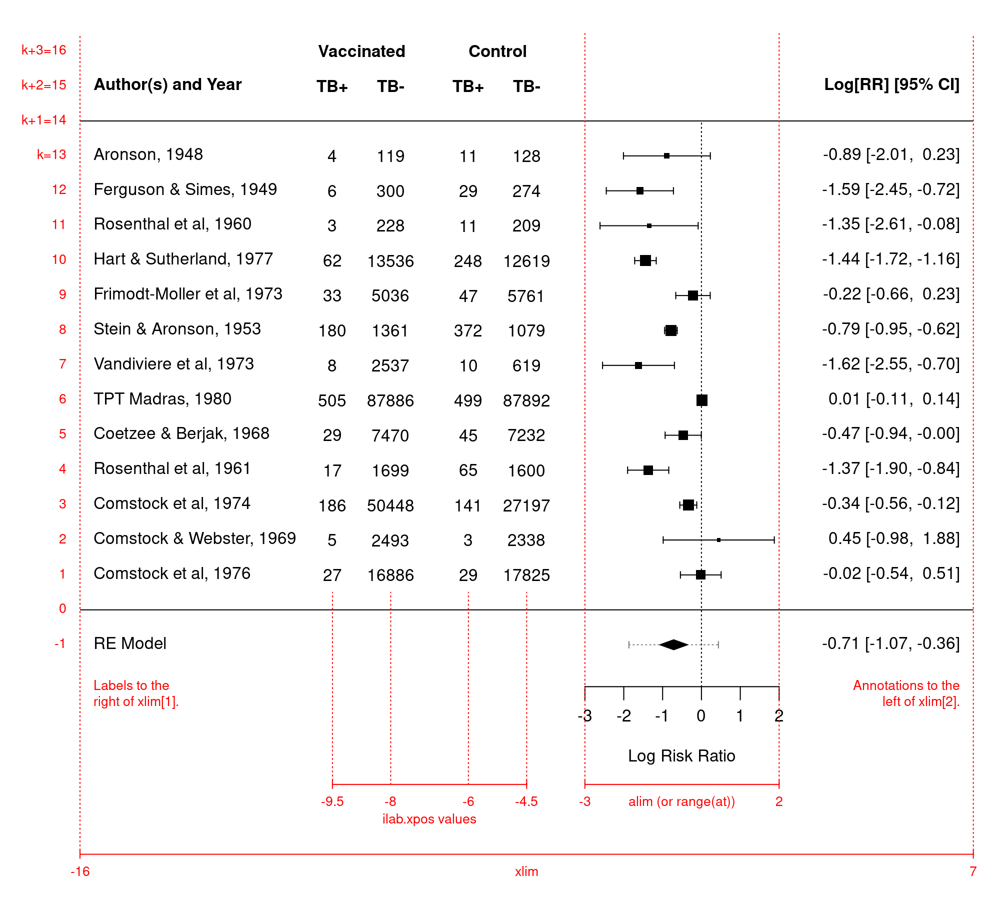
The figure corresponds to the following code:
dat <- escalc(measure="RR", ai=tpos, bi=tneg, ci=cpos, di=cneg,
slab=paste(author, year, sep=", "), data=dat.bcg)
res <- rma(yi, vi, data=dat)
forest(res, addpred=TRUE, xlim=c(-16,7), at=seq(-3,2,by=1), shade=TRUE,
ilab=cbind(tpos, tneg, cpos, cneg), ilab.xpos=c(-9.5, -8, -6, -4.5),
ilab.lab=c("TB+", "TB-", "TB+", "TB-"), cex=0.75, header="Author(s) and Year")
text(c(-8.75, -5.25), res$k+2.8, c("Vaccinated", "Control"), cex=0.75, font=2)Additional pooled estimates can be added to the plot as polygons with the addpoly function. See the documentation for that function for examples.
When showweights=TRUE, the annotations will include information about the weights given to the observed outcomes during the model fitting. For simple models (such as those fitted with the rma.uni function), these weights correspond to the ‘inverse-variance weights’ (but are given in percent). For models fitted with the rma.mv function, the weights are based on the diagonal of the weight matrix. Note that the weighting structure is typically more complex in such models (i.e., the weight matrix is usually not just a diagonal matrix) and the weights shown therefore do not reflect this complexity. See weights for more details (for the special case that x is an intercept-only "rma.mv" model, one can also set showweights="rowsum" to show the ‘row-sum weights’).
By default (i.e., when psize is not specified), the point sizes are a function of the square root of the model weights. This way, their areas are proportional to the weights. However, the point sizes are rescaled so that the smallest point size is plim[1] and the largest point size is plim[2]. As a result, their relative sizes (i.e., areas) no longer exactly correspond to their relative weights. If exactly relative point sizes are desired, one can set plim[2] to NA, in which case the points are rescaled so that the smallest point size corresponds to plim[1] and all other points are scaled accordingly. As a result, the largest point may be very large. Alternatively, one can set plim[1] to NA, in which case the points are rescaled so that the largest point size corresponds to plim[2] and all other points are scaled accordingly. As a result, the smallest point may be very small and essentially indistinguishable from the confidence interval line. To avoid the latter, one can also set plim[3], which enforces a minimal point size.
With the shade argument, one can shade rows of the plot. The argument can be set to one of the following character strings: "zebra" (same as shade=TRUE) or "zebra2" to use zebra-style shading (starting either at the first or second study) or to "all" in which case all rows are shaded. Alternatively, the argument can be set to a logical or numeric vector to specify which rows should be shaded. The colshade argument can be used to set the color of shaded rows.
Note
The function sets some sensible values for the optional arguments, but it may be necessary to adjust these in certain circumstances.
The function actually returns some information about the chosen values invisibly. Printing this information is useful as a starting point to customize the plot (see ‘Examples’).
For arguments slab and ilab and when specifying vectors for arguments pch, psize, order, and/or colout (and when shade is a logical vector), the variables specified are assumed to be of the same length as the data originally passed to the model fitting function (and if the data argument was used in the original model fit, then the variables will be searched for within this data frame first). Any subsetting and removal of studies with missing values is automatically applied to the variables specified via these arguments.
If the number of studies is quite large, the labels, annotations, and symbols may become quite small and impossible to read. Stretching the plot window vertically may then provide a more readable figure (one should call the function again after adjusting the window size, so that the label/symbol sizes can be properly adjusted). Also, the cex, cex.lab, and cex.axis arguments are then useful to adjust the symbol and text sizes.
If the outcome measure used for creating the plot is bounded (e.g., correlations are bounded between -1 and +1, proportions are bounded between 0 and 1), one can use the olim argument to enforce those limits (the observed outcomes and confidence/prediction intervals cannot exceed those bounds then).
The models without moderators, the col argument can also be a vector of two elements, the first for the color of the polygon, the second for the color of the line for the prediction interval. For predstyle="bar", col[2] can be used to adjust the bar color and border[2] the border color. For predstyle="shade", col can be a vector of up to three elements, where col[2] and col[3] specify the colors for the center and the ends of the shading region. For predstyle="dist", col can be a vector of up to four elements, col[2] for the tail regions, col[3] for the color above/below zero, col[4] for the opposite side (transparent by default), and border[2] for the color of the lines. Setting a color to NA makes it transparent.
The lty argument can also be a vector of up to three elements, the first for specifying the line type of the individual CIs ("solid" by default), the second for the line type of the prediction interval ("dotted" by default), the third for the line type of the horizontal lines that are automatically added to the plot ("solid" by default; set to "blank" to remove them).
Additional Optional Arguments
There are some additional optional arguments that can be passed to the function via ... (hence, they cannot be abbreviated):
- top
single numeric value to specify the amount of space (in terms of number of rows) to leave empty at the top of the plot (e.g., for adding headers). The default is 3.
- annosym
vector of length 3 to select the left bracket, separation, and right bracket symbols for the annotations. The default is
c(" [", ", ", "]"). Can also include a 4th element to adjust the look of the minus symbol, for example to use a proper minus sign (−) instead of a hyphen-minus (-). Can also include a 5th element that should be a space-like symbol (e.g., an ‘en space’) that is used in place of numbers (only relevant when trying to line up numbers exactly). For example,annosym=c(" [", ", ", "]", "\u2212", "\u2002")would use a proper minus sign and an ‘en space’ for the annotations. The decimal point character can be adjusted via theOutDecargument of theoptionsfunction before creating the plot (e.g.,options(OutDec=",")).- tabfig
single numeric value (either a 1, 2, or 3) to set
annosymautomatically to a vector that will exactly align the numbers in the annotations when using a font that provides ‘tabular figures’. Value 1 corresponds to using"\u2212"(a minus) and"\u2002"(an ‘en space’) inannoyymas shown above. Value 2 corresponds to"\u2013"(an ‘en dash’) and"\u2002"(an ‘en space’). Value 3 corresponds to"\u2212"(a minus) and"\u2007"(a ‘figure space’). The appropriate value for this argument depends on the font used. For example, for fonts Calibri and Carlito, 1 or 2 should work; for fonts Source Sans 3 and Palatino Linotype, 1, 2, and 3 should all work; for Computer/Latin Modern and Segoe UI, 2 should work; for Lato, Roboto, and Open Sans (and maybe Arial), 3 should work. Other fonts may work as well, but this is untested.- textpos
numeric vector of length 2 to specify the placement of the study labels and the annotations. The default is to use the horizontal limits of the plot region, i.e., the study labels to the right of
xlim[1]and the annotations to the left ofxlim[2].- rowadj
numeric vector of length 3 to vertically adjust the position of the study labels, the annotations, and the extra information (if specified via
ilab). This is useful for fine-tuning the position of text added with different positional alignments (i.e., argumentposin thetextfunction).
References
Lewis, S., & Clarke, M. (2001). Forest plots: Trying to see the wood and the trees. British Medical Journal, 322(7300), 1479–1480. https://doi.org/10.1136/bmj.322.7300.1479
Riley, R. D., Higgins, J. P. T., & Deeks, J. J. (2011). Interpretation of random effects meta-analyses. British Medical Journal, 342, d549. https://doi.org/10.1136/bmj.d549
Viechtbauer, W. (2010). Conducting meta-analyses in R with the metafor package. Journal of Statistical Software, 36(3), 1–48. https://doi.org/10.18637/jss.v036.i03
See also
Examples
### meta-analysis of the log risk ratios using a random-effects model
res <- rma(measure="RR", ai=tpos, bi=tneg, ci=cpos, di=cneg, data=dat.bcg,
slab=paste(author, year, sep=", "))
### default forest plot of the log risk ratios and pooled estimate
forest(res)
### pooled estimate in row -1; studies in rows k=13 through 1; horizontal
### lines in rows 0 and k+1; two extra lines of space at the top for headings,
### and other annotations; headings in line k+2
op <- par(xpd=TRUE)
text(x=-8.1, y=-1:16, -1:16, pos=4, cex=0.6, col="red")
par(op)
### can also inspect defaults chosen
defaults <- forest(res)
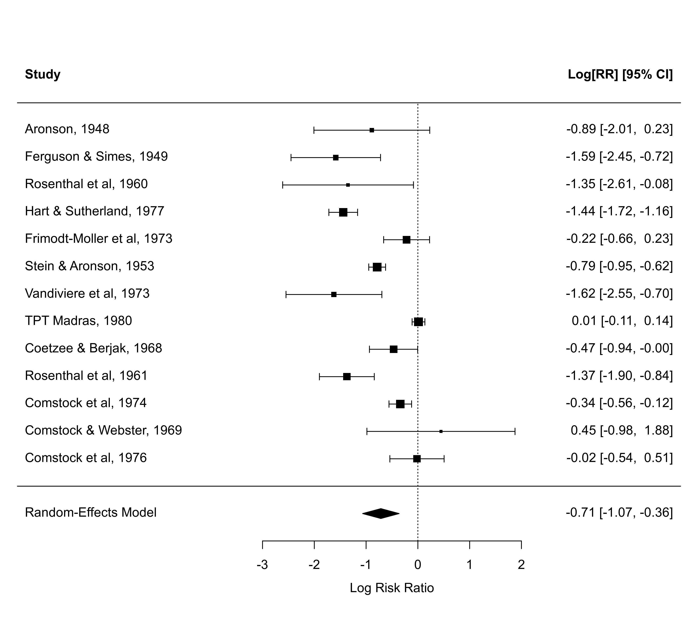
defaults
#> $xlim
#> [1] -7.74 5.08
#>
#> $alim
#> [1] -3 2
#>
#> $at
#> [1] -3 -2 -1 0 1 2
#>
#> $ylim
#> [1] -2 16
#>
#> $rows
#> [1] 1 2 3 4 5 6 7 8 9 10 11 12 13
#>
#> $cex
#> [1] 1
#>
#> $cex.lab
#> [1] 1
#>
#> $cex.axis
#> [1] 1
#>
#> $ilab.xpos
#> NULL
#>
#> $ilab.pos
#> NULL
#>
#> $textpos
#> [1] -7.74 5.08
#>
#> $areas
#> [1] 0.40 0.35 0.25
#>
### several forest plots illustrating the use of various arguments
forest(res)
forest(res, alim=c(-3,3))
forest(res, alim=c(-3,3), order="prec")
forest(res, alim=c(-3,3), order="obs")
forest(res, alim=c(-3,3), order=ablat)
### various ways to show the prediction interval
forest(res, addpred=TRUE)
forest(res, predstyle="bar")
forest(res, predstyle="shade")
forest(res, predstyle="dist")
### adjust xlim values to see how that changes the plot
forest(res)
 par("usr")[1:2] # this shows what xlim values were chosen by default
#> [1] -7.74 5.08
forest(res, xlim=c(-12,16))
forest(res, xlim=c(-18,10))
### illustrate the transf argument (note the asymmetric CI bounds)
forest(res, transf=exp, at=0:7, xlim=c(-8,12), refline=1)
### illustrate the atransf argument
forest(res, atransf=exp, at=log(c(0.05,0.25,1,4,20)), xlim=c(-8,7))
### showweights argument
forest(res, atransf=exp, at=log(c(0.05,0.25,1,4,20)), xlim=c(-8,8),
order="prec", showweights=TRUE)
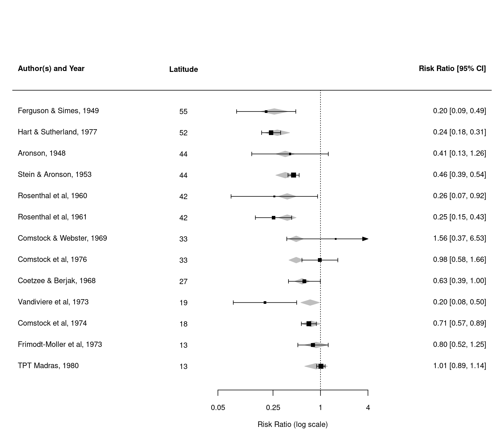
### illustrade shade argument
forest(res, shade="zebra")
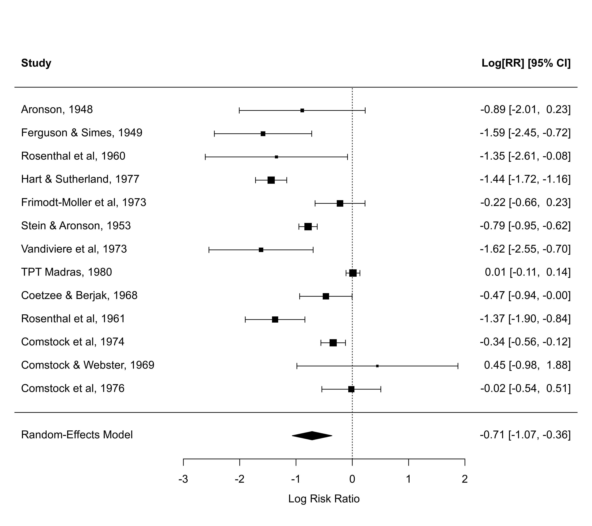
forest(res, shade=year >= 1970)
forest(res, shade=c(1,5,10))
### forest plot with extra annotations
### note: may need to widen plotting device to avoid overlapping text
forest(res, atransf=exp, at=log(c(0.05, 0.25, 1, 4)), xlim=c(-16,6),
ilab=cbind(tpos, tneg, cpos, cneg), ilab.lab=c("TB+","TB-","TB+","TB-"),
ilab.xpos=c(-9.5,-8,-6,-4.5), cex=0.85, header="Author(s) and Year")
text(c(-8.75,-5.25), res$k+2.8, c("Vaccinated", "Control"), cex=0.85, font=2)
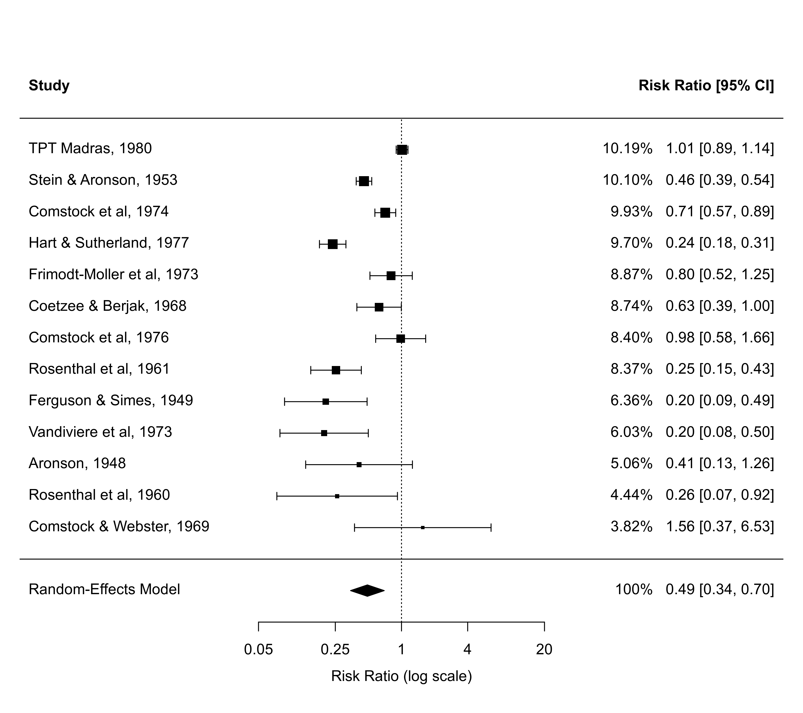
### mixed-effects model with absolute latitude as moderator
res <- rma(measure="RR", ai=tpos, bi=tneg, ci=cpos, di=cneg, mods = ~ ablat,
data=dat.bcg, slab=paste(author, year, sep=", "))
### forest plot with observed and fitted values
forest(res, xlim=c(-9,5), at=log(c(0.05,0.25,1,4)), order="fit",
ilab=ablat, ilab.xpos=-4.5, ilab.lab="Latitude", atransf=exp,
header="Author(s) and Year")
### meta-analysis of the log risk ratios using a random-effects model
res <- rma(measure="RR", ai=tpos, bi=tneg, ci=cpos, di=cneg, data=dat.bcg,
slab=paste(author, year, sep=", "))
### for more complicated plots, the ylim and rows arguments may be useful
forest(res)
forest(res, ylim=c(-2, 16)) # the default
forest(res, ylim=c(-2, 20)) # extra space in plot
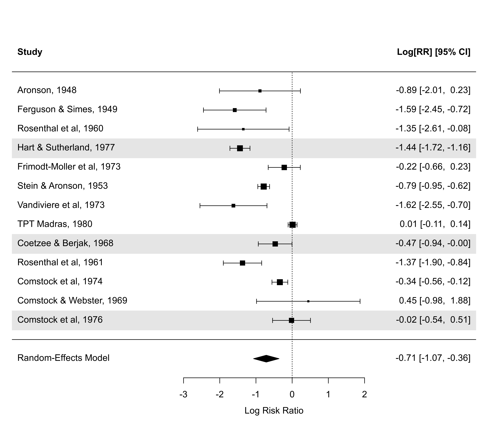
forest(res, ylim=c(-2, 20), rows=c(17:15, 12:6, 3:1)) # set positions
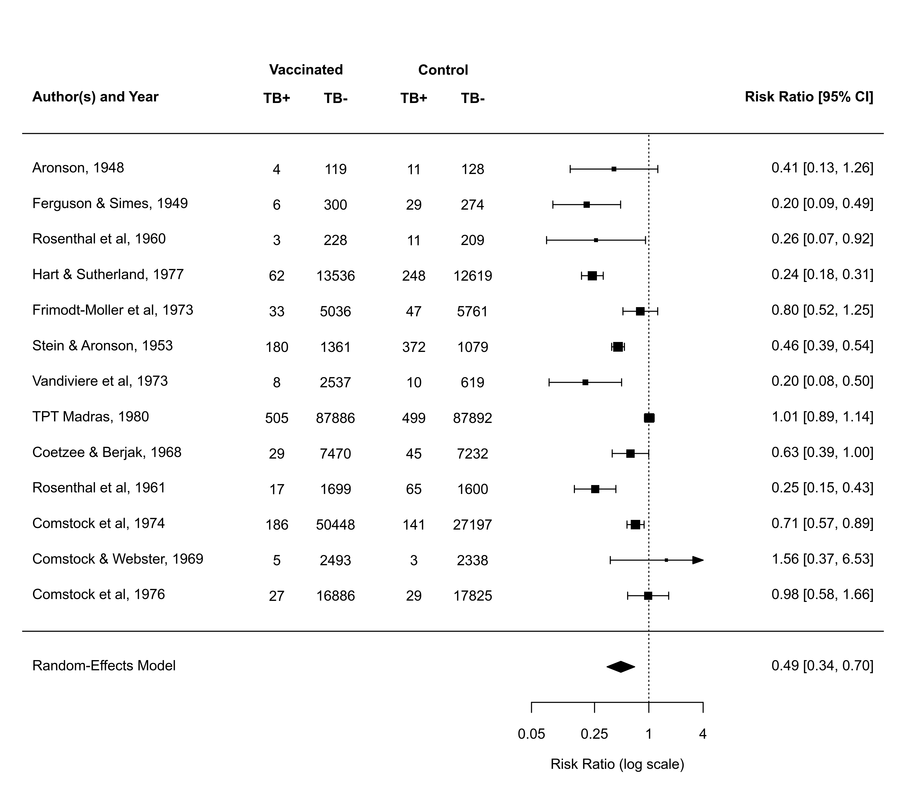
### forest plot with subgrouping of studies
### note: may need to widen plotting device to avoid overlapping text
tmp <- forest(res, xlim=c(-16, 6), at=log(c(0.05, 0.25, 1, 4)), atransf=exp,
ilab=cbind(tpos, tneg, cpos, cneg), ilab.lab=c("TB+","TB-","TB+","TB-"),
ilab.xpos=c(-9.5,-8,-6,-4.5), cex=0.85, ylim=c(-2, 21),
order=alloc, rows=c(1:2,5:11,14:17),
header="Author(s) and Year", shade=c(3,12,18))
op <- par(cex=tmp$cex)
text(c(-8.75,-5.25), tmp$ylim[2]-0.2, c("Vaccinated", "Control"), font=2)
text(-16, c(18,12,3), c("Systematic Allocation", "Random Allocation",
"Alternate Allocation"), font=4, pos=4)
par(op)
### see also the addpoly.rma function for an example where summaries
### for the three subgroups are added to such a forest plot
### illustrate the efac argument
forest(res)
forest(res, efac=c(0,1))
### illustrate use of olim argument with a meta-analysis of raw correlation
### coefficients (data from Pritz, 1997); without olim=c(0,1), some of the
### CIs would have upper bounds larger than 1
dat <- escalc(measure="PR", xi=xi, ni=ni, data=dat.pritz1997)
res <- rma(yi, vi, data=dat, slab=paste0(study, ") ", authors))
forest(res, xlim=c(-0.8,1.6), alim=c(0,1), psize=1, refline=coef(res), olim=c(0,1))
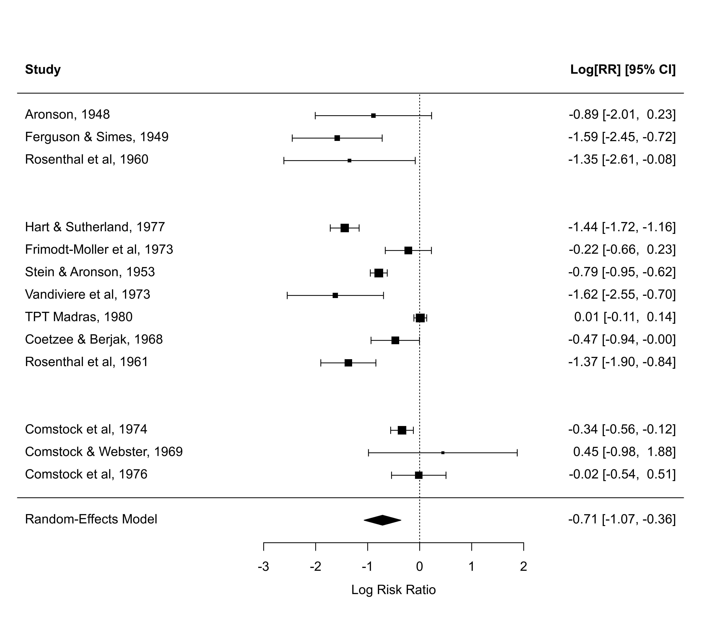
### an example of a forest plot where the data have a multilevel structure and
### we want to reflect this by grouping together estimates from the same cluster
dat <- dat.konstantopoulos2011
res <- rma.mv(yi, vi, random = ~ 1 | district/school, data=dat,
slab=paste0("District ", district, ", School: ", school))
dd <- c(0,diff(dat$district))
dd[dd > 0] <- 1
rows <- (1:res$k) + cumsum(dd)
op <- par(tck=-0.01, mgp = c(1.6,0.2,0), mar=c(3,8,1,6))
forest(res, cex=0.5, rows=rows, ylim=c(-2,max(rows)+3))
abline(h = rows[c(1,diff(rows)) == 2] - 1, lty="dotted")
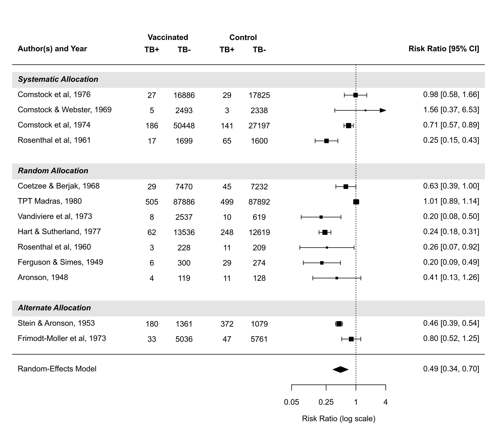
par(op)
### another approach where clusters are shaded in a zebra style
forest(res, cex=0.6, shade=as.numeric(factor(dat$district)) %% 2 == 0)
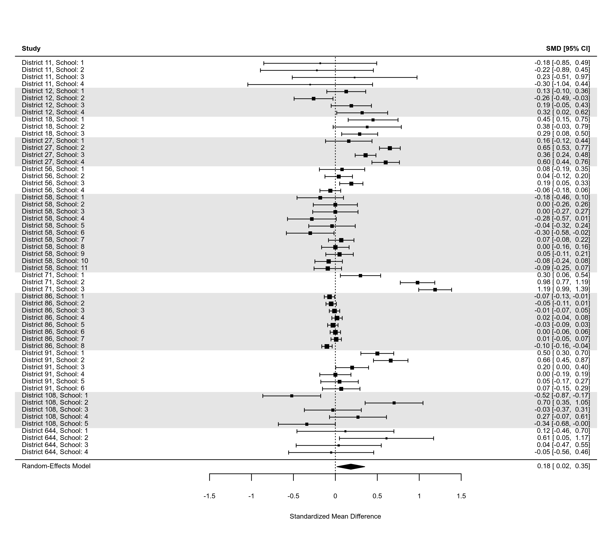
par("usr")[1:2] # this shows what xlim values were chosen by default
#> [1] -7.74 5.08
forest(res, xlim=c(-12,16))
forest(res, xlim=c(-18,10))
### illustrate the transf argument (note the asymmetric CI bounds)
forest(res, transf=exp, at=0:7, xlim=c(-8,12), refline=1)
### illustrate the atransf argument
forest(res, atransf=exp, at=log(c(0.05,0.25,1,4,20)), xlim=c(-8,7))
### showweights argument
forest(res, atransf=exp, at=log(c(0.05,0.25,1,4,20)), xlim=c(-8,8),
order="prec", showweights=TRUE)
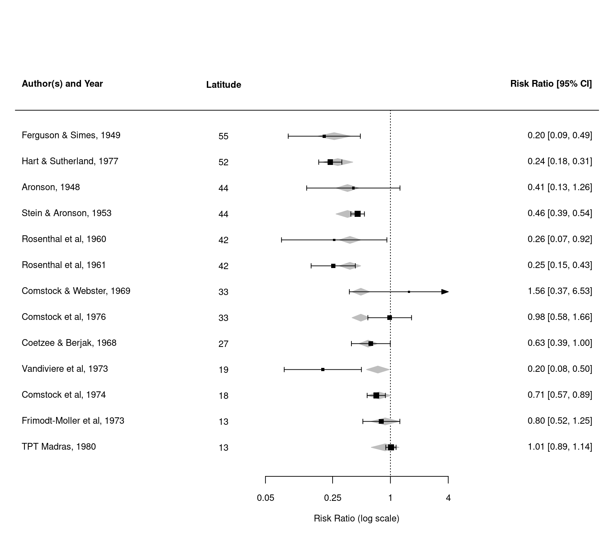
### illustrade shade argument
forest(res, shade="zebra")
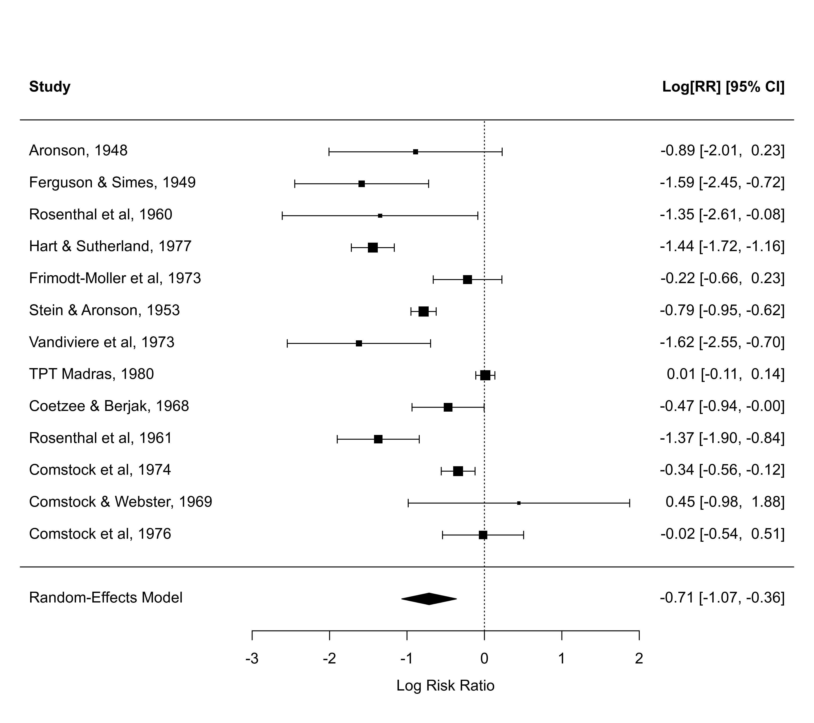
forest(res, shade=year >= 1970)
forest(res, shade=c(1,5,10))
### forest plot with extra annotations
### note: may need to widen plotting device to avoid overlapping text
forest(res, atransf=exp, at=log(c(0.05, 0.25, 1, 4)), xlim=c(-16,6),
ilab=cbind(tpos, tneg, cpos, cneg), ilab.lab=c("TB+","TB-","TB+","TB-"),
ilab.xpos=c(-9.5,-8,-6,-4.5), cex=0.85, header="Author(s) and Year")
text(c(-8.75,-5.25), res$k+2.8, c("Vaccinated", "Control"), cex=0.85, font=2)
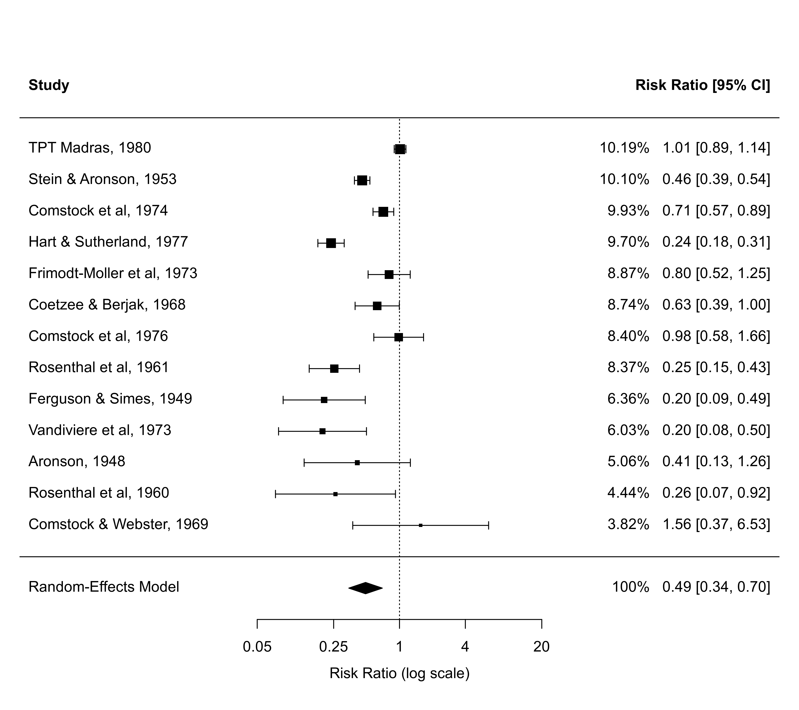
### mixed-effects model with absolute latitude as moderator
res <- rma(measure="RR", ai=tpos, bi=tneg, ci=cpos, di=cneg, mods = ~ ablat,
data=dat.bcg, slab=paste(author, year, sep=", "))
### forest plot with observed and fitted values
forest(res, xlim=c(-9,5), at=log(c(0.05,0.25,1,4)), order="fit",
ilab=ablat, ilab.xpos=-4.5, ilab.lab="Latitude", atransf=exp,
header="Author(s) and Year")
### meta-analysis of the log risk ratios using a random-effects model
res <- rma(measure="RR", ai=tpos, bi=tneg, ci=cpos, di=cneg, data=dat.bcg,
slab=paste(author, year, sep=", "))
### for more complicated plots, the ylim and rows arguments may be useful
forest(res)
forest(res, ylim=c(-2, 16)) # the default
forest(res, ylim=c(-2, 20)) # extra space in plot
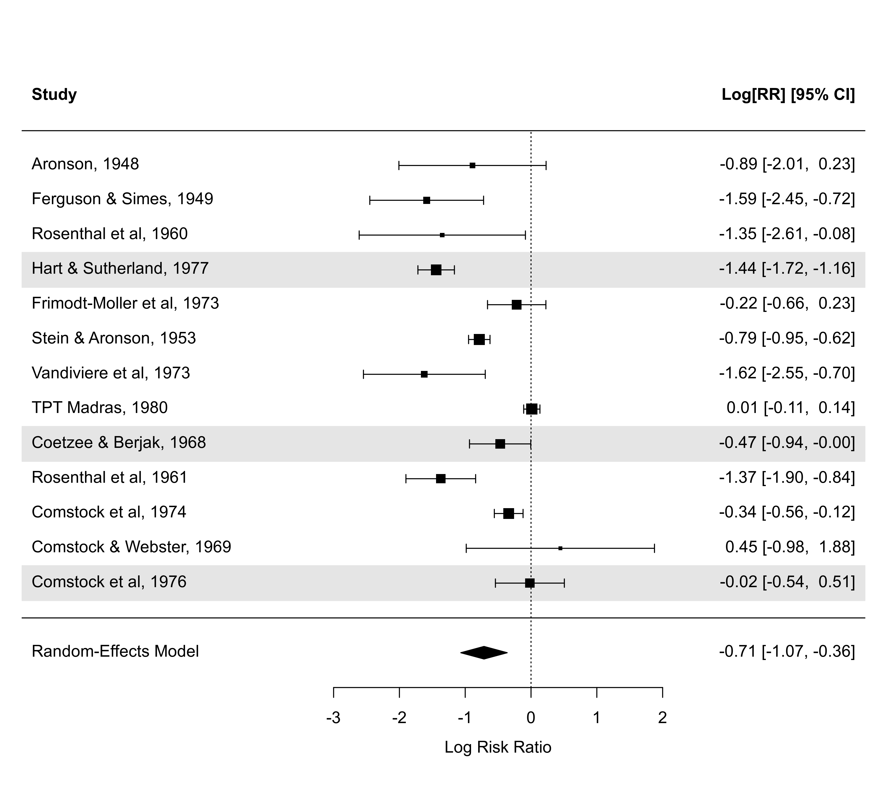
forest(res, ylim=c(-2, 20), rows=c(17:15, 12:6, 3:1)) # set positions
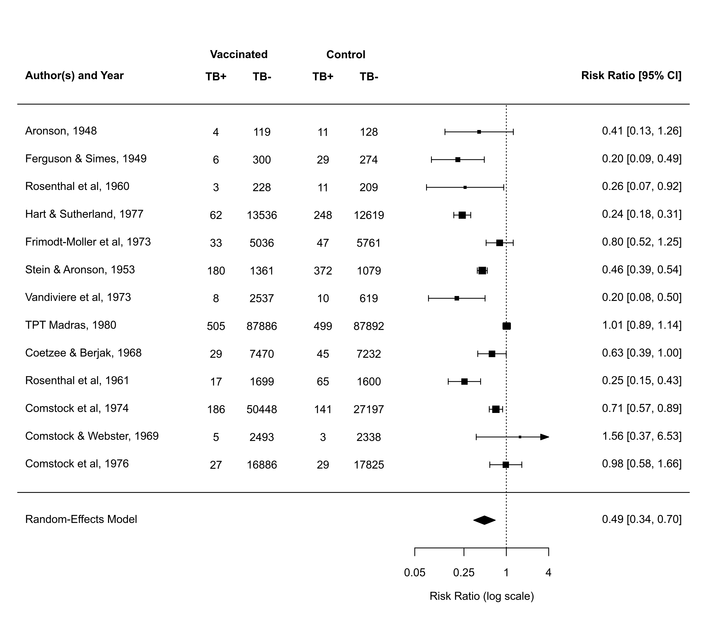
### forest plot with subgrouping of studies
### note: may need to widen plotting device to avoid overlapping text
tmp <- forest(res, xlim=c(-16, 6), at=log(c(0.05, 0.25, 1, 4)), atransf=exp,
ilab=cbind(tpos, tneg, cpos, cneg), ilab.lab=c("TB+","TB-","TB+","TB-"),
ilab.xpos=c(-9.5,-8,-6,-4.5), cex=0.85, ylim=c(-2, 21),
order=alloc, rows=c(1:2,5:11,14:17),
header="Author(s) and Year", shade=c(3,12,18))
op <- par(cex=tmp$cex)
text(c(-8.75,-5.25), tmp$ylim[2]-0.2, c("Vaccinated", "Control"), font=2)
text(-16, c(18,12,3), c("Systematic Allocation", "Random Allocation",
"Alternate Allocation"), font=4, pos=4)
par(op)
### see also the addpoly.rma function for an example where summaries
### for the three subgroups are added to such a forest plot
### illustrate the efac argument
forest(res)
forest(res, efac=c(0,1))
### illustrate use of olim argument with a meta-analysis of raw correlation
### coefficients (data from Pritz, 1997); without olim=c(0,1), some of the
### CIs would have upper bounds larger than 1
dat <- escalc(measure="PR", xi=xi, ni=ni, data=dat.pritz1997)
res <- rma(yi, vi, data=dat, slab=paste0(study, ") ", authors))
forest(res, xlim=c(-0.8,1.6), alim=c(0,1), psize=1, refline=coef(res), olim=c(0,1))
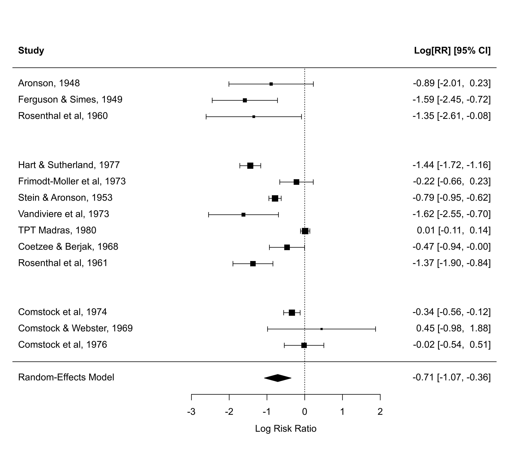
### an example of a forest plot where the data have a multilevel structure and
### we want to reflect this by grouping together estimates from the same cluster
dat <- dat.konstantopoulos2011
res <- rma.mv(yi, vi, random = ~ 1 | district/school, data=dat,
slab=paste0("District ", district, ", School: ", school))
dd <- c(0,diff(dat$district))
dd[dd > 0] <- 1
rows <- (1:res$k) + cumsum(dd)
op <- par(tck=-0.01, mgp = c(1.6,0.2,0), mar=c(3,8,1,6))
forest(res, cex=0.5, rows=rows, ylim=c(-2,max(rows)+3))
abline(h = rows[c(1,diff(rows)) == 2] - 1, lty="dotted")
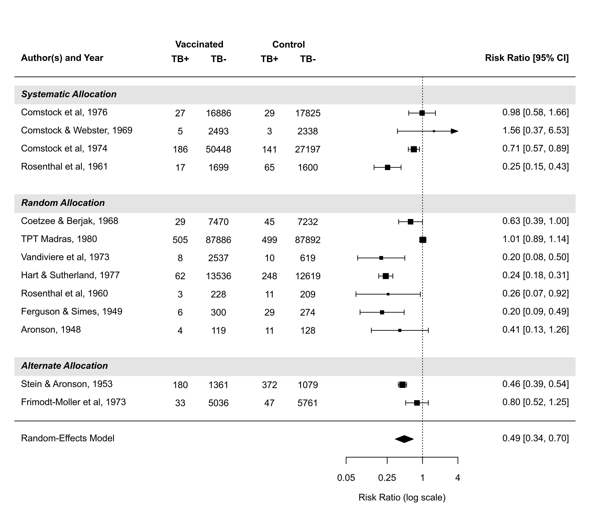
par(op)
### another approach where clusters are shaded in a zebra style
forest(res, cex=0.6, shade=as.numeric(factor(dat$district)) %% 2 == 0)
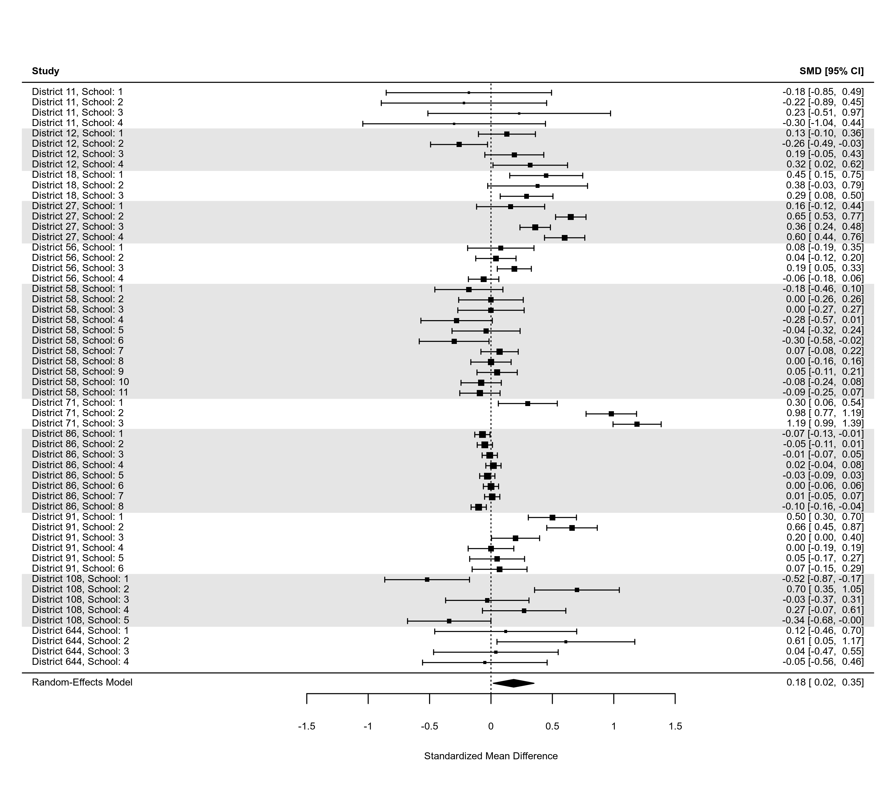